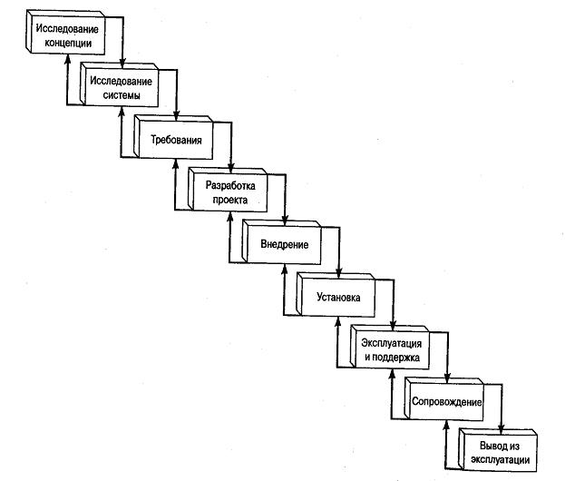

Каскадная модель жизненного цикла SLC (Software life cycle)
Это была первая модель, которая придала особое значение исходным требованиям и проектированию.
Попытки оптимизации данной модели привели к возникновению других циклов разработки ПО.Как правило, все новые модели разрабатывались с целью лучшего отображения устройства реального мира с учетом большой скорости разработок ПО, либо для вовлечения клиентов в процесс разработки с целью улучшения функциональных возможностей создаваемых программ. Для решения этих проблем появилась спиральная модель, быстрая эволюционная модель прототипирования, V-образная модель, а также некоторые другие модели. Большинство практиков вполне согласны с тем, что на сегодняшний день существует настолько много различных типов проектов, что в рамках одномерной модели SLC они вряд ли могут быть описаны. Современная точка зрения заключается в том, что необходимо использовать уникальные модели или комбинации моделей для уникальных проектов.

Рисунок 2.2 -Каскадная модель ЖЦ
Преимущества каскадной модели ЖЦ.
- Хорошо известна потребителям.
- Упорядоченно справляется со сложностями.
- Удобна в применении.
- Стабильность требований.
- Дефекты можно обнаружить на ранних этапах.
- Доступна для понимания.
- Хорошо определены стадии модели.
- Легко проследить ход выполнения проекта.
Недостатки каскадной модели ЖЦ.
- В основе - последовательная линейная структура.
- Требования должны быть известны вначале.
- Процесс обучения происходит в конце ЖЦ.
- Замораживание результативных данных по завершению каждой фазы.
- Интеграция полученных результатов происходит на завершающей стадии работы модели.
- Клиент не может ознакомиться с системой заранее.
- Программный продукт разрабатывается за один раз.
Область применения каскадной модели ЖЦ.
- В ситуациях, в которых требования и их реализация четко определены.
- При переносе уже существующего продукта на новую платформу.
- При выполнении больших проектов, в которых задействовано несколько больших команд разработчиков.